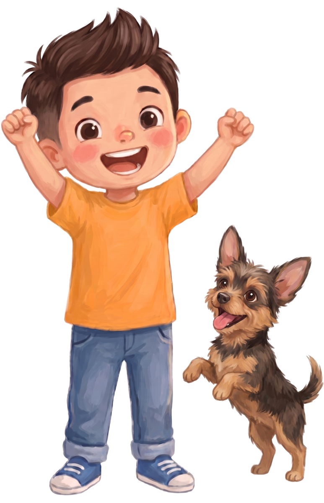

🐚Collect 5 stars to win a level!Tip: turn your volume up & press F11.

⭐ 0
🐚 Have fun counting & spelling! ⭐
👦🐕
Look closely and find the key!
📖 STORY TIME
⭐ 0
🎵
🗣️
🙂
Player⭐ 0 stars earned
Save your progress on any device
☁️ Signed in — synced across devices
👀 Reading help
👦🐕
About Yako
This game was made by Jacob “Yako” Tanzer in Carmel by the Sea. When Yako's not busy learning, he enjoys playing on the beach, walking his dog Zoe around town, jamming on his guitar and having pizza parties!